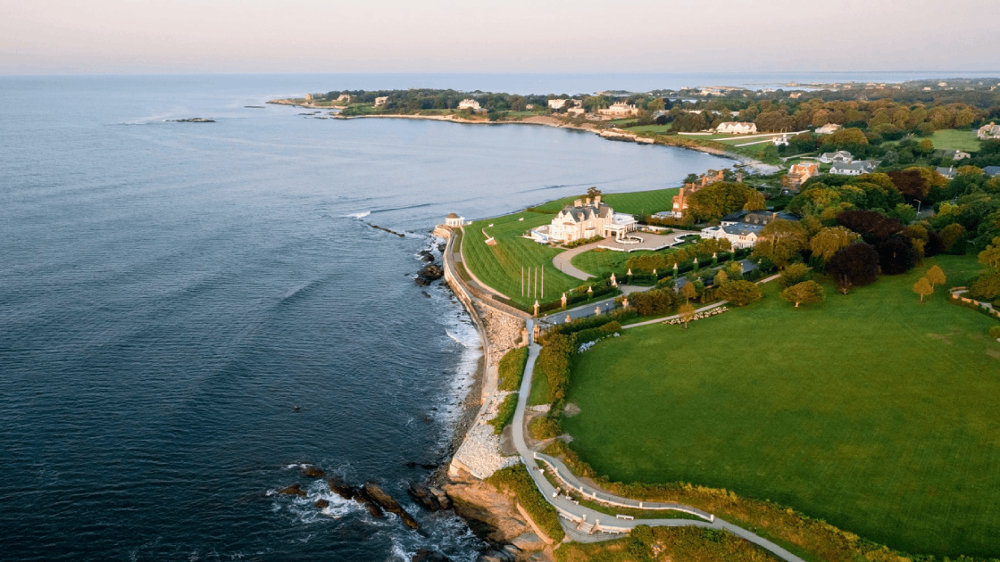
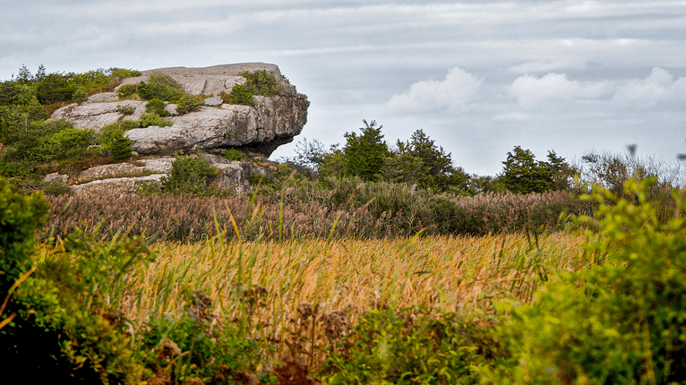
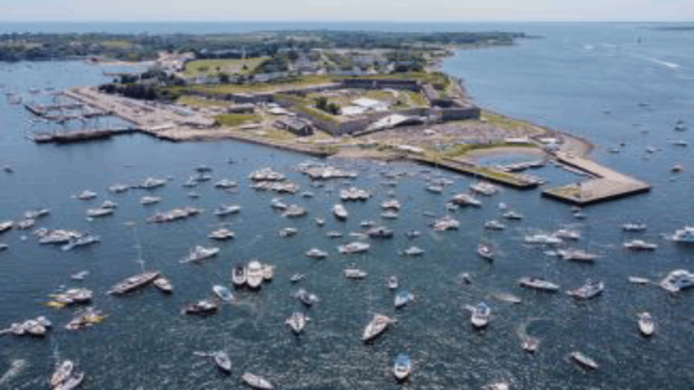

Natural Landmarks
Cliff Walk
Located in Newport at 117 Memorial Blvd. The natural landmark established in the 1880s paved a free path for people to walk on private property. As Mansions' blocked the view of the ocean this path was establish to give a clear view of the ocean for the public to see. In addition, it also gave the public a peek into the world of the wealthy. The path runs through several historical estates such as the Breakers.
Norman Bird Sanctuary
Located in Middletown at 583 3rd Beach Road. The Norman Bird Sanctuary has around 325 acre of wildlife with various trails going through it. These trails go through a variety of landscapes such as open fields, wet lands, woodlands, and etc. At the center of it all lies a historical farm used mainly for sheep grazing and growing mixed crops and hay. Some of the sanctuary still surrounded by walls of an forgone orchard, garden, and fields.
Fort Adams State Park
Located in Newport at 80 Fort Adams Drive. Fort Adams is old military fortress that dates back to the 1900s. It offers a mix of natural beauty and filled with rich history. It served for the U.S Navy for 10 years and Army for more than a century. The fort is located at the mouth of the Newport Harbor making it perfect to fight against invaders to the Newport Harbor as it was next to Fort Dumpling. Any invaders would be surrounded by both fortress making it difficult to defend. Other than Its history it also have some nice amenities such as fishing piers, bicycling, Canoe kayak launch, and more.